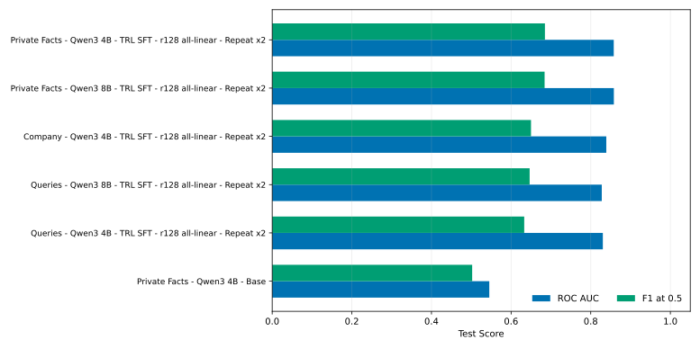
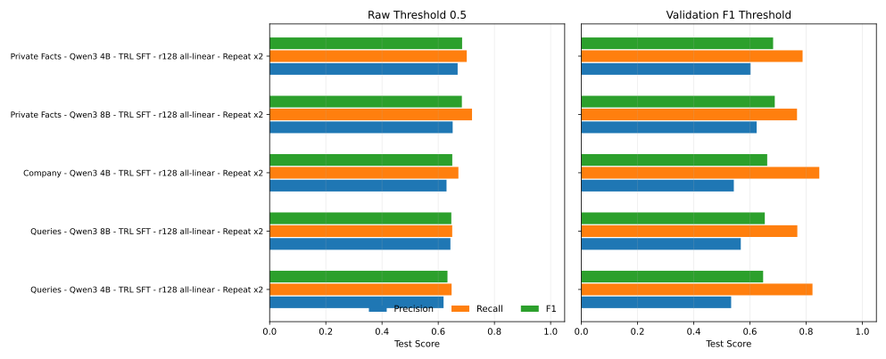
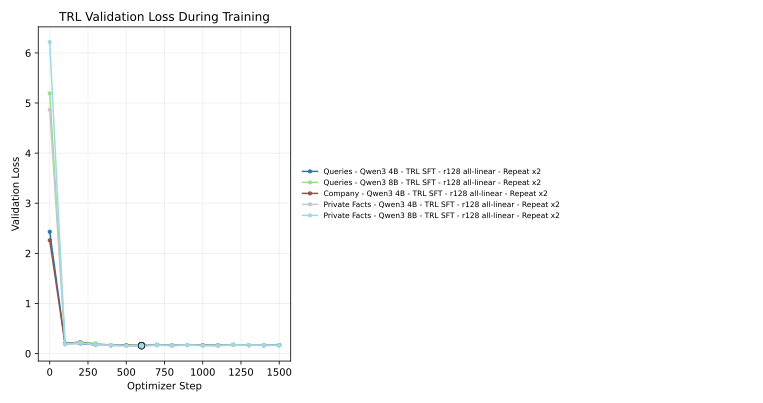
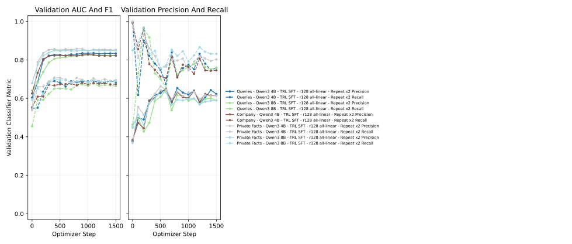
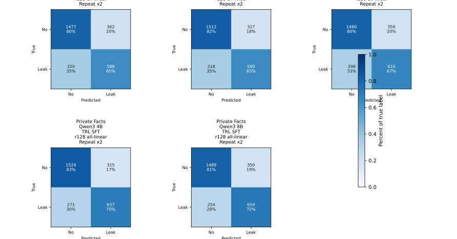
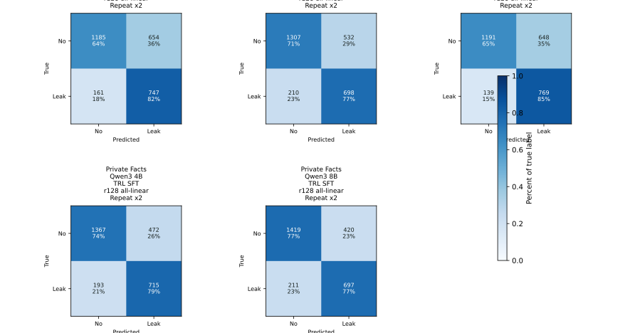
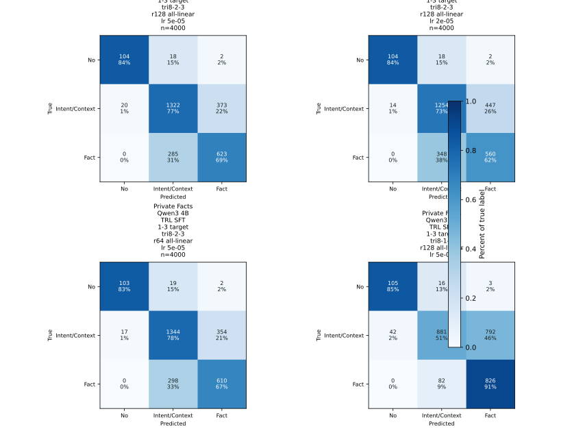
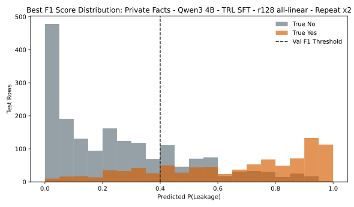

Generated 2026-05-18T05:00:02.195991+00:00. Binary label target: StepFun primary_privacy_binary with score>=4 fallback for legacy rows.
Best raw-threshold practical F1 is Company - Qwen3 4B - TRL SFT - r128 all-linear - Repeat x2: ROC AUC 0.839, precision 63.0%, recall 67.2%, F1 65.0%. Best oracle/contextual run is Private Facts - Qwen3 4B - TRL SFT - r128 all-linear - Repeat x2: AUC 0.858, precision 66.9%, recall 70.2%, F1 68.5%. The ablation says positive repeat is important for recall/calibration; r=128 all-linear did not clearly improve over r=16 default LoRA. The ternary setup is useful diagnostically, but fact-leak F1 is only 65.3% with recall 91.0%, below the binary reward model.
| Split | Rows | Tasks | Fact-Leak Positive Rows | Positive Rate |
|---|---|---|---|---|
| Train | 19390 | 75 | 5952 | 30.7% |
| Val | 2385 | 10 | 824 | 34.5% |
| Test | 2747 | 15 | 908 | 33.1% |
Random ranking AUC is 0.500. The test positive rate is 33.1%; an always-No classifier has zero recall and zero F1. Run tables report the row counts from each run's own prediction files, so older pre-rebuild runs may show different counts.
| Binary Target | Yes when StepFun overall privacy leakage score is 4 or 5; No for 1-3. |
|---|---|
| Ternary Target | A = no leakage, B = intent-only leakage, C = answer/full-information fact leakage. |
| Trainer Labels | Custom SFT is the older hand-written Hugging Face Trainer loop; TRL SFT uses TRL's SFTTrainer. Both train the causal LM on label tokens, not a separate classification head. |
| Binary Score | P(leakage) is softmax(Yes, No) from the next-token logits after the prompt. |
| Threshold | The 0.5 threshold is the Yes-vs-No argmax. The report also shows a validation-selected threshold chosen to maximize validation F1. |
| Evaluation | Metrics use next-token probabilities for exact label tokens, not sampled generation. |
| Primary Metrics | ROC AUC for ranking plus precision, recall, and F1 at threshold 0.5 and a validation-selected F1 threshold. |
| Splits | Clean deterministic task-id grouped train/validation/test split. |
| Efficiency | TRL SFTTrainer prompt-completion loss, FlashAttention 2, Liger kernel, fused AdamW, bf16, gradient checkpointing. |
| Logging | W&B project alexgurung/privacy_hopqa_binary_reward_sft; current TRL runs stream online and log eval_loss plus one-token classifier metrics at each eval step. |
| Queries Only | Only the visible web query sequence. This is the strict deployable setting if the reward model only sees public searches. |
|---|---|
| Company Context | Visible web queries plus company name. This is still cheap at runtime and helps decide whether a query reveals enterprise-private facts. |
| Chain Context | Visible web queries plus company, hop pattern, research question, and subquestions. Diagnostic/oracle-style context, not the main deployable setting. |
| Private Facts | Visible web queries plus company and the full retrieved-doc Private QA/local-hop fact list. This is an oracle/contextual reward model, useful for testing whether explicit private-fact context improves precision. |
| Test | Trainer | Variant | Base Model | Positive Repeat | LoRA | Best Val Loss | Test ROC AUC | Precision @0.5 | Recall @0.5 | F1 @0.5 | Val F1 Threshold | Precision @ValThr | Recall @ValThr | F1 @ValThr | TP/FP/FN @0.5 | Test Positives | W&B | Path |
|---|---|---|---|---|---|---|---|---|---|---|---|---|---|---|---|---|---|---|
| Company - Qwen3 4B - TRL SFT - r128 all-linear - Repeat x2 | TRL SFT | Company Context | Qwen3 4B | 2 | r128 a32 all-linear d0.0 | 0.160 | 0.839 | 63.0% | 67.2% | 65.0% | 0.349 | 54.3% | 84.7% | 66.2% | 610/359/298 | 908/2747 | W&B | /mnt/llmd/results/exps/alexg/reason/privacy_hopqa_q30_binary_reward_sft_trl_20260517/models/company_context_4b_r128_rep2_lr5e5_20260517 |
| Private Facts - Qwen3 4B - Base | TRL SFT | Private Facts | Qwen3 4B | 2 | n/a | n/a | 0.545 | 33.5% | 100.0% | 50.2% | 1.000 | 35.2% | 98.2% | 51.8% | 908/1800/0 | 908/2747 | /mnt/llmd/results/exps/alexg/reason/privacy_hopqa_q30_binary_reward_sft_trl_20260517/models/private_fact_context_4b_base_eval_current_20260518013458 | |
| Private Facts - Qwen3 4B - TRL SFT - r128 all-linear - Repeat x2 | TRL SFT | Private Facts | Qwen3 4B | 2 | r128 a32 all-linear d0.0 | 0.153 | 0.858 | 66.9% | 70.2% | 68.5% | 0.400 | 60.2% | 78.7% | 68.3% | 637/315/271 | 908/2747 | W&B | /mnt/llmd/results/exps/alexg/reason/privacy_hopqa_q30_binary_reward_sft_trl_20260517/models/private_fact_context_4b_r128_rep2_lr5e5_20260517 |
| Private Facts - Qwen3 8B - TRL SFT - r128 all-linear - Repeat x2 | TRL SFT | Private Facts | Qwen3 8B | 2 | r128 a32 all-linear d0.0 | 0.155 | 0.858 | 65.1% | 72.0% | 68.4% | 0.469 | 62.4% | 76.8% | 68.8% | 654/350/254 | 908/2747 | W&B | /mnt/llmd/results/exps/alexg/reason/privacy_hopqa_q30_binary_reward_sft_trl_20260517/models/private_fact_context_8b_r128_rep2_lr3e5_20260517 |
| Queries - Qwen3 4B - TRL SFT - r128 all-linear - Repeat x2 | TRL SFT | Queries Only | Qwen3 4B | 2 | r128 a32 all-linear d0.0 | 0.158 | 0.830 | 61.9% | 64.8% | 63.3% | 0.349 | 53.3% | 82.3% | 64.7% | 588/362/320 | 908/2747 | W&B | /mnt/llmd/results/exps/alexg/reason/privacy_hopqa_q30_binary_reward_sft_trl_20260517/models/queries_only_4b_r128_rep2_lr5e5_20260517 |
| Queries - Qwen3 8B - TRL SFT - r128 all-linear - Repeat x2 | TRL SFT | Queries Only | Qwen3 8B | 2 | r128 a32 all-linear d0.0 | 0.162 | 0.828 | 64.3% | 65.0% | 64.7% | 0.400 | 56.7% | 76.9% | 65.3% | 590/327/318 | 908/2747 | W&B | /mnt/llmd/results/exps/alexg/reason/privacy_hopqa_q30_binary_reward_sft_trl_20260517/models/queries_only_8b_r128_rep2_lr3e5_20260517 |
| Test | Best Val Loss | Accuracy | Macro F1 | Macro OVR AUC | No F1 | Intent/Context F1 | Fact Precision | Fact Recall | Fact F1 | Fact-vs-Rest AUC | Confusion A/B/C | W&B | Path |
|---|---|---|---|---|---|---|---|---|---|---|---|---|---|
| Private Facts - Qwen3 4B - TRL SFT - 1-3 target - r8 all-linear | n/a | 8.3% | 7.7% | n/a | 0.0% | 0.0% | 8.3% | 100.0% | 15.4% | 0.875 | [[0, 0, 0], [0, 0, 22], [0, 0, 2]] | /mnt/llmd/results/exps/alexg/reason/privacy_hopqa_q30_binary_reward_sft_trl_20260517/models/private_fact_context_4b_ternary_smoke2_20260518 | |
| Private Facts - Qwen3 4B - TRL SFT - 1-3 target - r128 all-linear | 0.233 | 66.0% | 69.4% | 0.893 | 77.5% | 65.4% | 51.0% | 91.0% | 65.3% | 0.858 | [[105, 16, 3], [42, 881, 792], [0, 82, 826]] | W&B | /mnt/llmd/results/exps/alexg/reason/privacy_hopqa_q30_binary_reward_sft_trl_20260517/models/private_fact_context_4b_ternary_tri8-1-6_r128_lr5e5_20260518 |


These are the repeated training-time validation-loss evaluations from TRL trainer state. In W&B this curve is logged as eval/loss; final classifier metrics such as eval/test/roc_auc are logged once after training.

These are one-token Yes/No classifier metrics on the validation split, logged at each TRL eval step as reward_eval/val/*. Newer runs include this curve; older runs only have the final split metrics.

Rows are true labels, columns are predicted labels. Each cell shows count and percent of the true-label row.

The validation threshold is selected independently for each run to maximize validation F1.

A = No leakage, B = intent/context leakage, C = fact leakage. The plot uses readable class names.

